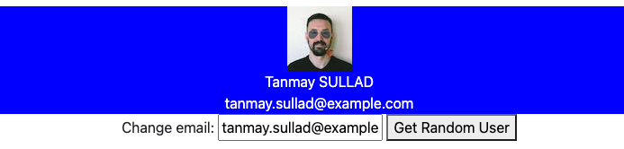

- Add code in getUser() in revision.js such that when this page is loaded a random user's image, first name, last name, email should be displayed as shown in the figure below. the The input field should shows the user's current email.
- To obtain a random user, use the API given in random.js and make AXIOS GET request.
- If the random user's gender is female, change the background color to Pink. Otherwise, change it to Blue.
- Add code in update() in revision.js such that when you make changes to the email address, the email gets updated.
- When "Get Random User" button is clicked, a new random user should be fetched and the information displayed should be updated accordingly.

firstName LASTNAME
xxx@email.com
Change email: